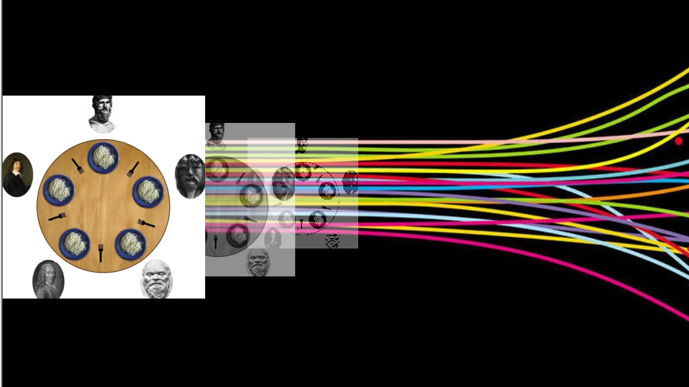

Project Philosophers
Major concepts: working with threads and processes in C

One or more philosophers sit at a round table. There is a large bowl of spaghetti in the middle of the table. The philosophers alternatively eat, think, or sleep. There are as many forks as philosophers on the table and a philosopher needs their right and their left forks to eat, one in each hand. When a philosopher has finished eating, they put their forks back on the table and start sleeping. Once awake, they start thinking again. The simulation stops when a philosopher dies of starvation. Every philosopher needs to eat and should never starve.